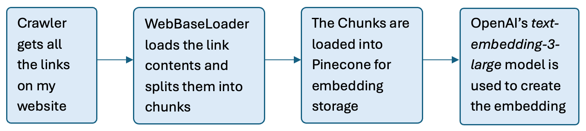
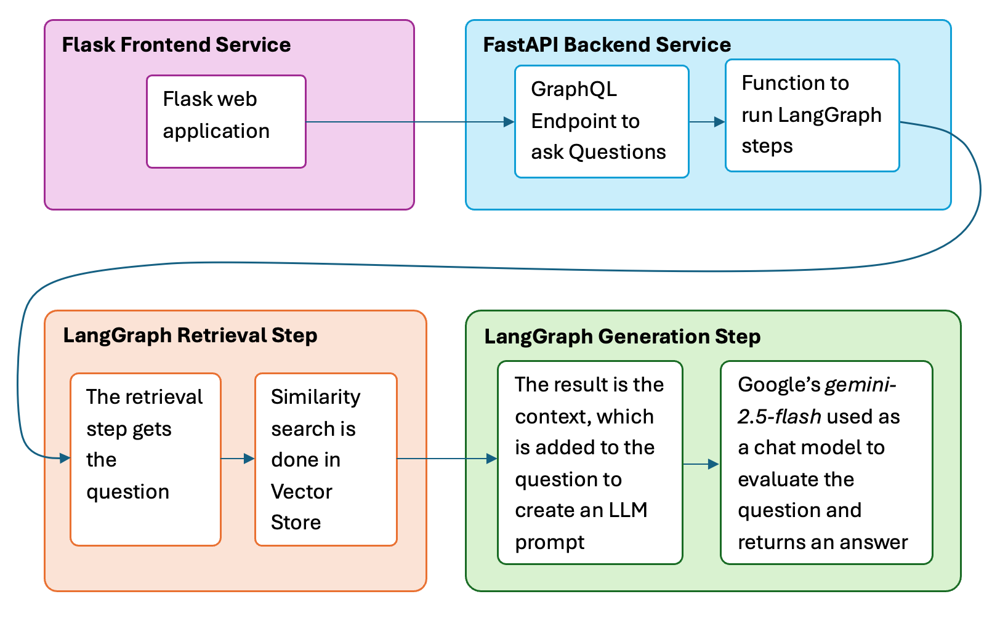

Ask my RAG
A LangGraph RAG application exposed by a FastAPI GraphQL backend.
The context came from webscraping my website - www.leonardeshun.com.
Start a conversation. Try asking:
- "What certifications does he have?"
- "What tools does he use for AI engineering?"
- "What projects are on his website?"
RAG Project Description
The Indexing Process

This project shows a LangGraph pipeline served via FastAPI + Strawberry GraphQL with vector search in Pinecone. A crawler crawls my website to get all the loadable links. Then the contents of the links are loaded and chunked for easier processing by the models. Embeddings are created from the chunks and stored in Pinecone for later retrieval.
Try asking
- "What projects are on his website?"
- "What tools does he use for data engineering?"
The Question-and-Answer Process

The question is entered into the Flask frontend application. It's sent to the FastAPI GraphQL backend which calls the function to start executing the steps of the LangGraph. An embedding is created from the question and a similarity search done in Pinecone to find semantically related text to the question.
This is the context, and it is added to the question to create a prompt for Google's Gemini Flash chat model. The answer is returned through the same pipeline and displayed on the Flask Frontend application.
This RAG application can be used for any website. Just change the website in the code on GitHub. It can also be adapted for other data sources by changing the loader.